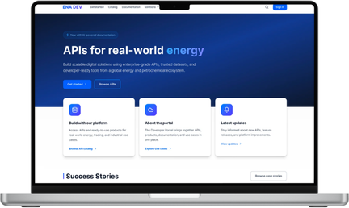

01
Sales Enablement Platform Research
Enterprise UX Research
End-to-end research to uncover friction, validate opportunities, and guide the evolution of a global sales enablement platform.
View case study
My work combines research, systems thinking and strategy to help teams understand complexity before deciding what to build.
Each project is a deep dive into complex problems, uncertainty, and human behavior. Turning insights into direction.
Enterprise UX Research
End-to-end research to uncover friction, validate opportunities, and guide the evolution of a global sales enablement platform.
View case study
Research & Assessment Design
A structured assessment to evaluate developer experience maturity and identify opportunities for meaningful, sustainable improvement.
View case study
Móni has a remarkable ability to challenge assumptions constructively and bring new perspective to any product discussions and dilemmas to help decision making.
Pronovix Team
What sets Mónika apart is her thoughtful approach to research. She asks the right questions, designs rigorous studies, and communicates findings clearly to both technical and non-technical stakeholders.
Pronovix Team
Enterprise UX Research
Account managers already understood their clients. What they lacked was the confidence and language to connect technical capabilities to business value — a one-week discovery sprint uncovered what was really getting in the way.
My Role
Designed a mixed-methods research plan that balanced speed with depth, enabling the team to make confident decisions within five days.
Trained designers to conduct interviews alongside me, increasing research capacity while ensuring the team heard customer perspectives firsthand.
Mentored a designer through interview planning and facilitation, helping strengthen research skills within the team.
The company had invested heavily in its API ecosystem, but these products rarely surfaced in customer conversations. While account managers excelled at understanding client needs, they often lacked the confidence and language to introduce technical solutions. API discussions typically happened only after customers asked for them, creating an ongoing dependence on a small group of technical specialists.
The challenge wasn't explaining APIs — it was helping account managers confidently connect technical capabilities to business outcomes.
This wasn't a polished twelve-week research project — we had five days to understand the problem, shape a concept, and validate it with users. Research lived in a shared Miro board, evolving alongside design decisions as evidence became a validated prototype.

Capture
Organised emerging findings while research was still in progress.
Rather than waiting for transcripts, I clustered observations as interviews happened — working directly from notes kept the team aligned around emerging themes.
Synthesize
Identified two distinct user mindsets.
Interviews revealed two fundamentally different mental models — relationship-focused account managers framed conversations around business outcomes, while systems-focused specialists thought in terms of technical integration.
Frame
Turned research into design opportunities.
We translated our findings into "How Might We" questions and prioritized them together, moving from observations to concrete design opportunities.
Validate
Tested the concept before the sprint ended.
Everyone sketched concepts based on the research, converging on a shared direction — then we mapped user flows and validated the prototype with the same participants through five usability sessions.
Research informed both the content strategy and the AI workflow — account managers described the customer challenge and selected the APIs used, AI generated a draft focused on business outcomes, and users refined it before publishing. The workflow reduced the effort of documenting success stories while keeping the language aligned with how customers understand value.

The research showed the real barrier wasn't technical knowledge — it was confidence. Instead of training materials, we shifted towards giving account managers relevant, customer-ready content they could confidently use in conversations.
The findings directly informed the AI-assisted sales enablement workflow, the structure of solution-oriented case studies, and the content creation process — together creating a repeatable way to translate technical capabilities into business language, validated with users before development began.
"Last week I started watching the interview recordings. They are super interesting!"
Energy Enterprise Client
"I think it's good that we are engaging. I appreciate the effort to bring all this information together into one place."
Energy Enterprise Client
Research & Assessment Design
Enterprise clients had invested heavily in developer portals but had no way to know if it was working — or what to build next.
Enterprise clients had invested heavily in developer portals but had no reliable way to evaluate their effectiveness or prioritise improvements. Existing assessments focused on interface quality, not overall portal maturity.
Internally, every evaluation relied on expert judgement, making assessments difficult to compare or scale.
The challenge wasn't reviewing interfaces — it was creating a framework that connected UX, technical capability, and business value into a measurable definition of portal maturity.
Before defining portal maturity, I reviewed existing models and interviewed developers using enterprise portals.
The key insight: developer portals are ecosystems, not websites. Documentation, APIs, onboarding, governance, and business goals all shape the experience, so the framework adapts to each portal's purpose.
Reviewed existing maturity models, interviewed developers, and synthesized patterns through card sorting.
Built an evaluation framework informed by research and real-world portal use.
Tested the framework against existing customer portals while verifying results.
Created executive-ready data visualizations alongside detailed engineering views for different stakeholders.
Designed an AI-assisted workflow using NotebookLM and Gemini that reduced evaluation time by 80% without compromising consistency.
Different stakeholder needs influenced how results were presented.

Created assessment outputs tailored to product management and engineering to show a more granular view of results.
Instead of producing static UX audits, the framework generated contextual recommendations tailored to each organisation's goals.
Using NotebookLM and Gemini, I designed an AI-assisted workflow that automated analysis, scoring, and reporting. Manual review remained an essential step to ensure recommendations were accurate and trustworthy.
Frameworks aren't valuable because they're comprehensive. They're valuable because they're contextual.
Rather than applying a universal checklist, I designed the framework to adapt its assessment criteria to each organisation's goals, ensuring recommendations were relevant, fair, and actionable.